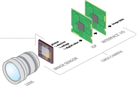
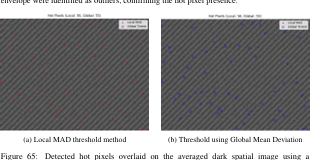
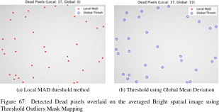
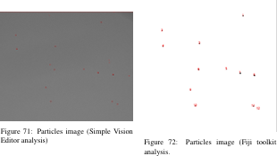
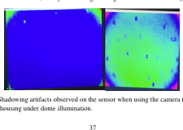
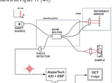

I design and build optical instrumentation: image sensor characterization systems,
OCT signal chains, and precision opto-mechanics, combining hands-on optical assembly
with Python-based measurement and analysis pipelines.
Bremen, GermanyEAH Jena · Scientific InstrumentationOpen to roles in DACH / Europe
photon transfer curve · EMVA 1288
PHOTO (place coat_image.png next to this file)
Bremen · 2026
01 / Projects
Work along the optical rail
Selected projects across industrial R&D, applied research, and published engineering work.
Industry projects are described at the methodology level in accordance with confidentiality agreements.
2025 – 2026
Master's ThesisficonTEC Service GmbH · AchimEMVA 1288 · Machine Vision
Dual-Illumination System for Image Sensor Characterization and Defect Detection
Supervised by Prof. Dr. Robert Brunner (EAH Jena) and Dr.-Ing. Mahmoud Essameldin (ficonTEC)
Problem
EMVA 1288 sensor characterization traditionally relies on integrating spheres or long
collimated free-space setups to achieve homogeneous flat-field illumination at the specified
f-number. Contamination and defect inspection normally requires separate instruments,
making combined evaluation slow and impractical in production settings.
Approach
Designed and built a compact dual-illumination optical test bench: a dome-based broadband
channel for uniform flat-field illumination (standardized characterization and pixel defect
mapping) and a co-aligned telecentric channel for high-contrast detection of surface particles
and defects. Both modes share a common optical axis with electronically adjustable intensity,
so the sensor never needs repositioning. Custom 3D-printed opto-mechanical housings, multi-axis
alignment with tilt control, active thermal management under the sensor, and integration into
an industrial production control platform.
Fig. 1 · Concept schematic (original drawing): co-aligned dome and telecentric illumination sharing one optical axis, switchable without repositioning the sensor
Fig. 2 · Evaluation pipeline from raw frames to standardized metrics and defect maps
EMVA 1288 linear camera model: photons → electrons → digital grey value

Camera module: lens, image sensor and processing electronics

Hot pixels detected on the averaged dark frame: local MAD vs. global mean deviation threshold

Dead pixels detected on the averaged bright frame via threshold outliers mask mapping

Surface particles on the sensor: raw image and detection result (Fiji toolkit analysis)

Shadowing artifacts observed under dome illumination with the camera in its housing, one of the effects the dual-illumination design addressesPhoton transfer curve: shot-noise fit, read-noise floor, saturation (illustrative)
Fixed-pattern noise decomposition: DSNU (dark) and PRNU (flat-field) maps per EMVA 1288 (illustrative)
PHOTO SLOT · add img/thesis-setup.jpg once cleared by ficonTEC
What I built
A Python-based EMVA 1288 evaluation pipeline covering photon transfer analysis, system gain,
quantum efficiency, temporal noise, SNR, dynamic range, linearity, and DSNU/PRNU decomposition,
plus robust-statistics defect detection (MAD and Z-score methods) for hot/dead pixels and
micron-scale surface particles. Fully automated acquisition, processing, and standardized
plot generation traceable to the EMVA 1288 Release 4.0 framework.
Outcome
A working prototype that combines standards-compliant characterization and sensitive surface
inspection in a single integrated workflow, something conventional integrating-sphere benches
cannot do without separate instruments and procedures.
Thesis content is subject to a non-disclosure agreement with ficonTEC Service GmbH.
Descriptions here stay at the methodology level; proprietary designs, data, and performance figures are omitted.
2025
R&D InternshipficonTEC Service GmbH · AchimActive Alignment · Camera Modules
Active Alignment Concepts for Camera Modules
January – May 2025
Investigated active alignment strategies for camera module assembly: diffractive optical
elements, pattern-based alignment approaches, and the mathematical models linking measured
image quality to alignment corrections. Built and tested opto-mechanical setups hands-on
and worked directly on ficonTEC's production control platform, bridging alignment theory
and machine-level implementation.
Four-Dimensional Microscope-Integrated Swept-Source OCT
February – July 2024 · Corporate Research & Technology · Supervised by Dr. Philipp Matten
Context
Contributed to the development of a research-grade, microscope-integrated swept-source OCT
system for live volumetric (4D) ophthalmic imaging, designed for interfaceability that
certified medical devices cannot offer.
Hardware
Assembled and aligned interferometer optics, laser sources, and fiber components, and
integrated detection electronics into the prototype signal path, including DAQ-based
acquisition of interference signals.
Fig. 3 · SS-OCT system concept (original drawing): fiber interferometer with k-clock referenced acquisition
Fig. 4 · Reconstruction chain I implemented, from raw interference signal to volumetric scans
SS-OCT principle: wavelength sweep, interference and detected fringe signal

System schematic: swept source, beam splitter, reference mirror, detector and DSP
SS-OCT retinal B-scan: layered retina with foveal pit, the kind of image the reconstruction chain produces (illustrative)From spectral fringes to depth profile: interferogram after k-space resampling, and the FFT-reconstructed A-scan (illustrative)
Signal processing
Implemented the full OCT reconstruction chain in software: background subtraction, k-space
resampling against the k-clock signal, spectral windowing, numerical dispersion compensation,
and FFT-based depth reconstruction through to A-, B-, and C-scan visualization. Optimized
dispersion compensation via iterative coarse-to-fine search over polynomial phase coefficients,
evaluated by point spread function width.
2021 – 2022
Published · ICCET 2022Kongu Engineering College1st Place · IDEATHON-2021
Linear Motion Humidifier for Mushroom Cultivation
Awarded a startup development grant
Mushroom cultivation demands 80–95% relative humidity, but conventional water spraying causes
stagnation and fungal disease, usually countered with pesticides that degrade the crop. We designed
a low-cost ultrasonic humidifier that traverses linearly along the growing racks: a lead screw and
12V gear motor convert rotary to linear motion, distributing fine mist (droplets around 32 µm)
uniformly across all mushroom bags. Modeled in SolidWorks, built as a working prototype with a
relay-based drive circuit, and validated by psychrometric analysis reaching the target 85% RH.
The design eliminates chemical treatment while cutting labor and cost.
Fig. 6 · Mechanism: lead screw converts rotary to linear motion, sweeping mist uniformly along the rack
SolidWorks model of the humidifier with lead screw traversal (from our ICCET 2022 paper)Relay-based drive circuit for forward/reverse motor traversal
Relative humidity achieved (target 80–95%)
~32 µmmean droplet size
350 mL/hmax evaporation rate
2021
Published · Materials Today: ProceedingsKongu Engineering CollegeMaterials Testing
Flexural and Crashworthiness Studies of Friction Stir Welded Aluminum Alloy Pipes
Friction stir welding of AA 6063 pipe geometry
Friction stir welding of pipes is far less established than welding of flat plates. We welded
AA 6063 pipes using a custom mandrel-based fixture mounted on a conventional vertical milling
machine, then evaluated the joints under quasi-static axial crushing (ASTM D3410) and three-point
flexural loading (ASTM D790). The study quantified crash force efficiency and flexural strength
of the welded joints and identified tool pin diameter as the limiting factor for weld integrity
under bending, contributing to the sparse literature on FSW of pipe geometries.
Fig. 7 · Custom fixture concept and the two test programs applied to the welded joints
Welding setup: FSW tool in the milling machine with mandrel-held pipe (from our paper)Welded AA 6063 pipe samplesQuasi-static axial crush test of the welded joint
Three-point flexural test on the 1000 kN UTMCrush test: load vs. elongation (Fmax 64.43 kN)Flexural test: failure at the weld plane (7.35 kN)
Crash force efficiency
7.35 kNmax flexural load
21 mmdeflection at failure
2000 rpmtool rotation
2019 – 2020
Competition · SAEISS ETWDC 2020Team ENVISION · Kongu Engineering College
Electric Bike Design
SAEISS Electric Two-Wheeler Design Competition
Team project covering the full design cycle of an electric two-wheeler: frame design and CAE
analysis, BLDC motor and battery selection, and vehicle integration, developed and presented
for the national SAEISS competition.
3D CAD model of the ENVISION e-bike (Fusion 360)The fabricated prototype
CAE analysis of the frameRider triangle designed for a relaxed cruiser position
Ergonomic Assessment of Body Muscular Stiffness in Copra Extraction
Applied design-of-experiments and response surface methodology to assess muscular stiffness
in manual copra extraction work, informing the ergonomic design of an improved extraction tool.
01.b / Also hands-on with
Graduate optics laboratory work
Selected laboratory projects from the M.Sc. Scientific Instrumentation program at EAH Jena.
Ray Tracing for Optical Analysis of Solid Models
Optical Instruments Laboratory
Monte Carlo ray tracing of solid optical models in TracePro across three exercises: an f/4 imaging lens, a bent fiber-optic light-pipe, and polarized reflection off a titanium surface.
Exercise 1 · f/4 biconvex lens, f = 100 mm
Symmetrical biconvex lens (R = ±100 mm, semi-diameter 12.5 mm) with a grid source and a perfect-absorber detector; irradiance evaluated at 100 mm and 200 mm.
Lens design: surface radii of curvature inputRay trace with detector at 100 mmIrradiance map at the focal plane
Exercise 2 · Fiber-optic light-pipe, straight & 90° bend
Core Ø1.5 mm × 150 mm with 0.3 mm N-BK7 cladding. Straight B270 core captured 92.89% of incident energy; after the 90° bend, N-BAK4 (95.9%) outperformed B270 (85%) as core material.
Light-pipe design: grid source inputGuided rays in the straight pipeIrradiance at the pipe exit face
Exercise 3 · Polarized reflection off titanium
Titanium sample (n ≈ 1.876) illuminated with -45° linear polarized light at the Brewster angle (61.94°); the polarization maps show the reflected light becoming elliptically/circularly polarized.
Sample design: titanium surface + detectorPolarized beam reflecting at Brewster anglePolarization map at the titanium surface
from the report
Wavefront Analysis
Optical Instruments Laboratory (OI 3)
Wavefront measurement and aberration analysis of optical systems using laboratory wavefront sensing, evaluating aberration content from measured wavefront maps.
Shack-Hartmann wavefront sensing (from the report)Aberration analysis output
from the report
Microscopy
Laboratory Course
Practical microscopy techniques: imaging modes, resolution limits, and quantitative image evaluation of specimens.
Languages: Tamil (native) · English (fluent) · German (B1, actively improving).
This list reflects tools I have genuinely used in project work; I keep it honest rather than exhaustive.
03.b / Certifications
Documented skills and results
A formal certification, plus the participation certificate for the competition referenced
in the Electric Bike project above.
Certified
AutoCAD Course Certificate
2D/3D CAD drafting · underpins the mechanical & opto-mechanical design work above
2020
SAEISS Electric Two-Wheeler Design Competition
Certificate of participation · Team ENVISION, Kongu Engineering College
04 / Contact
Let's build precise things.
Open to optical engineering, photonics, instrumentation, machine vision, and R&D roles
across DACH and Europe. Based in Bremen with a German post-study residence permit.